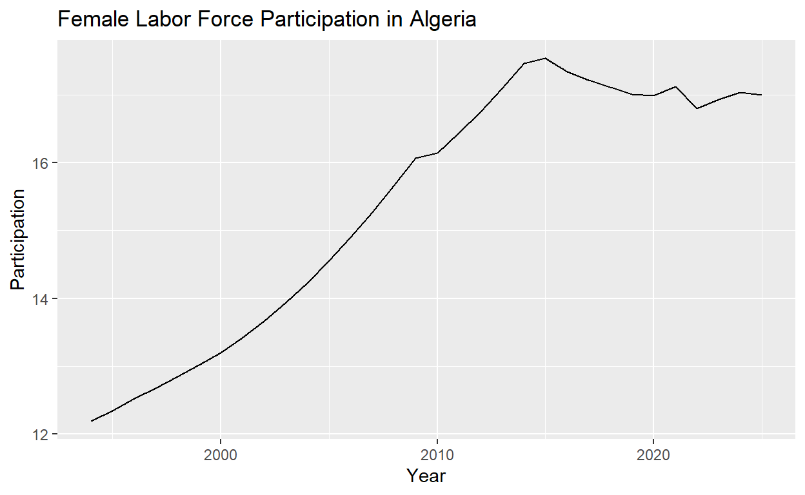
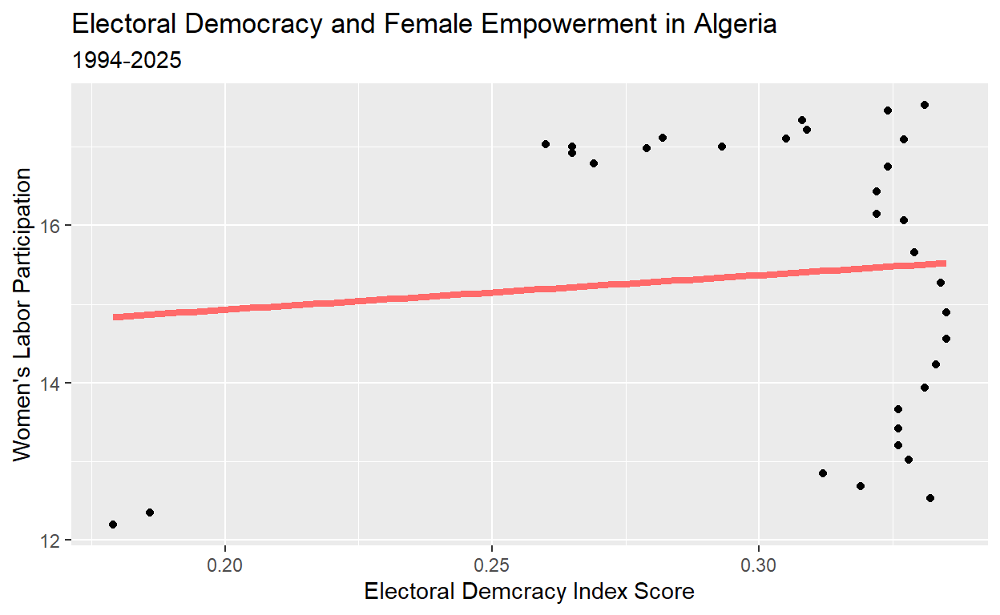

My final project
Introduction:
Political scientists have long studied what factors promote democracy. In 2008, Valentine Mogham proposed that women’s empowerment and equality were vital to sustaining a democracy. Thus, I would like to analyze how gender equality has progressed alongside democratic backsliding. I would like to find an answer for the following research question: how have prospects for gender equality progressed in response to the electoral competition in Algeria from 1994 to present? According to my hypothesis, democratic backsliding is associated with worse outcomes for female empowerment in Algeria. These findings are important for forming a greater understanding of how to promote and sustain democracy.
Data: To evaluate this hypothesis I will use two key variables. The independent variable is the strength of Algeria’s democracy, which will be measured via the data from the Electoral Democracy Index.The Electoral Democracy Index estimates the extent to which political leaders are elected under comprehensive voting rights in free and fair elections, where freedoms of association and expression are guaranteed on a scale of 0 to 1. To measure my dependent variable, gender equality outcomes, I will use World Bank data on female labor force participation. Female labor force participation intersects with various aspects of female empowerment, such as economic independence and the ability to work outside of the home. Below, a chart visualizes these two variables. Each variable will be evaluated from data beginning in 1989, when the National People’s Assembly revokes the ban on new political parties. I expect to observe lower electoral democracy index scores, alongside decreasing female labor force participation. I will run a regression in which the dependent/outcome variable is female empowerment and the independent/explanatory variable is the strength of Algeria’s democracy. To reject my hypothesis I would expect to see a positive correlation from the regression coefficient. Additionally, if there is not sufficient evidence to reject the null hypothesis that there is not a relationship between democracy and female empowerment. On the other hand, the alternative hypothesis would suggest that higher electoral democracy index scores were correlated with higher scores for female labor force participation.
Country.Name Country.Code
1 Aruba ABW
2 Africa Eastern and Southern AFE
3 Afghanistan AFG
4 Africa Western and Central AFW
5 Angola AGO
6 Albania ALB
Indicator.Name Indicator.Code
1 Labor force, female (% of total labor force) SL.TLF.TOTL.FE.ZS
2 Labor force, female (% of total labor force) SL.TLF.TOTL.FE.ZS
3 Labor force, female (% of total labor force) SL.TLF.TOTL.FE.ZS
4 Labor force, female (% of total labor force) SL.TLF.TOTL.FE.ZS
5 Labor force, female (% of total labor force) SL.TLF.TOTL.FE.ZS
6 Labor force, female (% of total labor force) SL.TLF.TOTL.FE.ZS
X1990 X1991 X1992 X1993 X1994 X1995 X1996
1 NA NA NA NA NA NA NA
2 46.26577 46.33545 46.45270 46.43190 46.58756 46.90336 47.08998
3 17.03242 17.01390 16.96254 16.86019 16.71443 16.55169 16.36742
4 45.70849 45.75138 45.80403 45.81224 45.88210 45.88840 45.88493
5 50.07564 50.11137 50.13843 50.21052 50.30046 50.32482 50.30340
6 41.95959 43.29997 43.69393 43.43142 43.23196 42.88562 42.72016
X1997 X1998 X1999 X2000 X2001 X2002 X2003
1 NA NA NA NA NA NA NA
2 47.18406 47.20028 47.25731 47.29569 47.32546 47.36748 47.40149
3 16.16346 15.96267 15.77188 15.60988 15.49975 15.44183 15.42854
4 45.92227 45.91824 45.97056 46.03303 46.06106 46.13686 46.12807
5 50.28993 50.30245 50.34699 50.39342 50.43503 50.46940 50.47548
6 43.32009 43.20092 42.97758 42.95798 42.79867 42.62807 42.76893
X2004 X2005 X2006 X2007 X2008 X2009 X2010
1 NA NA NA NA NA NA NA
2 47.42726 47.44951 47.42187 47.36563 47.30990 47.26555 47.22747
3 15.46258 15.54095 15.67418 15.87888 16.14043 16.43009 16.73733
4 46.14037 46.13285 46.17893 46.22564 46.20842 46.16287 46.17111
5 50.46353 50.44513 50.41826 50.38533 50.34636 50.30253 50.26130
6 42.92544 43.10622 43.31664 43.56054 43.83793 42.74772 43.33101
X2011 X2012 X2013 X2014 X2015 X2016 X2017
1 NA NA NA NA NA NA NA
2 47.25511 47.03000 47.13577 47.01259 46.87100 46.74859 46.62518
3 17.04020 17.33413 18.28339 19.27022 20.29415 21.35418 22.46313
4 46.08122 46.07258 45.98847 45.89671 45.85373 45.74978 45.73086
5 49.69289 49.69359 49.70055 49.71280 49.72937 49.74600 49.76378
6 44.76129 43.84844 42.67223 42.04859 43.38923 44.48219 43.77112
X2018 X2019 X2020 X2021 X2022 X2023 X2024
1 NA NA NA NA NA NA NA
2 46.46886 46.29403 46.12247 46.06806 46.09272 47.209890 47.231329
3 21.75024 20.90424 19.83618 17.99397 6.86395 6.848413 6.820446
4 45.63003 45.56974 45.44752 45.57743 45.56121 46.378289 46.415550
5 49.78380 49.80407 49.80506 50.05418 50.33158 49.398305 49.422521
6 44.28691 44.82521 44.95293 44.96474 46.37522 46.369111 46.431634
X2025
1 NA
2 47.248816
3 6.781949
4 46.385641
5 49.381295
6 46.579166long_data <- my_data |>
pivot_longer(
cols = `X1994`:`X2025`,
names_to = "year",
values_to = "labor_participation"
) |>
select(-Indicator.Code) |>
group_by(Country.Name, year) |>
summarize(
labor_participation = mean(labor_participation, na.rm = TRUE),
.groups = "drop"
)
long_data# A tibble: 8,512 × 3
Country.Name year labor_participation
<chr> <chr> <dbl>
1 Afghanistan X1994 16.7
2 Afghanistan X1995 16.6
3 Afghanistan X1996 16.4
4 Afghanistan X1997 16.2
5 Afghanistan X1998 16.0
6 Afghanistan X1999 15.8
7 Afghanistan X2000 15.6
8 Afghanistan X2001 15.5
9 Afghanistan X2002 15.4
10 Afghanistan X2003 15.4
# ℹ 8,502 more rowslong_data |>
filter(Country.Name == "Algeria") |>
mutate(year = as.numeric(gsub("X", "", year)))|>
ggplot(aes(x = year, y = labor_participation)) +
geom_line() +
labs(
title = "Female Labor Force Participation in Algeria",
x = "Year",
y = "Participation"
) 
library(jsonlite)
# Fetch the data
democracy_data <- read.csv("https://ourworldindata.org/grapher/electoral-democracy-index.csv?v=1&csvType=full&useColumnShortNames=false")
# Fetch the metadata
metadata <- fromJSON("https://ourworldindata.org/grapher/electoral-democracy-index.metadata.json?v=1&csvType=full&useColumnShortNames=false")
head(democracy_data) Entity Code Year Electoral.Democracy.Index
1 Afghanistan AFG 1789 0.019
2 Afghanistan AFG 1790 0.019
3 Afghanistan AFG 1791 0.019
4 Afghanistan AFG 1792 0.019
5 Afghanistan AFG 1793 0.019
6 Afghanistan AFG 1794 0.019
World.region.according.to.OWID
1 Asia
2 Asia
3 Asia
4 Asia
5 Asia
6 Asialibrary(tidyverse)
algeria_data <- democracy_data |>
filter(Entity == "Algeria") |>
select(Entity, Year, Electoral.Democracy.Index)
algeria_data Entity Year Electoral.Democracy.Index
1 Algeria 1900 0.041
2 Algeria 1901 0.041
3 Algeria 1902 0.041
4 Algeria 1903 0.041
5 Algeria 1904 0.041
6 Algeria 1905 0.041
7 Algeria 1906 0.041
8 Algeria 1907 0.041
9 Algeria 1908 0.041
10 Algeria 1909 0.041
11 Algeria 1910 0.041
12 Algeria 1911 0.041
13 Algeria 1912 0.041
14 Algeria 1913 0.041
15 Algeria 1914 0.041
16 Algeria 1915 0.041
17 Algeria 1916 0.041
18 Algeria 1917 0.041
19 Algeria 1918 0.041
20 Algeria 1919 0.041
21 Algeria 1920 0.041
22 Algeria 1921 0.041
23 Algeria 1922 0.041
24 Algeria 1923 0.040
25 Algeria 1924 0.040
26 Algeria 1925 0.040
27 Algeria 1926 0.043
28 Algeria 1927 0.045
29 Algeria 1928 0.045
30 Algeria 1929 0.045
31 Algeria 1930 0.045
32 Algeria 1931 0.045
33 Algeria 1932 0.045
34 Algeria 1933 0.045
35 Algeria 1934 0.045
36 Algeria 1935 0.045
37 Algeria 1936 0.045
38 Algeria 1937 0.045
39 Algeria 1938 0.045
40 Algeria 1939 0.045
41 Algeria 1940 0.045
42 Algeria 1941 0.045
43 Algeria 1942 0.045
44 Algeria 1943 0.045
45 Algeria 1944 0.045
46 Algeria 1945 0.047
47 Algeria 1946 0.072
48 Algeria 1947 0.072
49 Algeria 1948 0.088
50 Algeria 1949 0.094
51 Algeria 1950 0.094
52 Algeria 1951 0.094
53 Algeria 1952 0.104
54 Algeria 1953 0.077
55 Algeria 1954 0.077
56 Algeria 1955 0.088
57 Algeria 1956 0.083
58 Algeria 1957 0.075
59 Algeria 1958 0.075
60 Algeria 1959 0.075
61 Algeria 1960 0.075
62 Algeria 1961 0.075
63 Algeria 1962 0.076
64 Algeria 1963 0.189
65 Algeria 1964 0.186
66 Algeria 1965 0.131
67 Algeria 1966 0.084
68 Algeria 1967 0.084
69 Algeria 1968 0.084
70 Algeria 1969 0.084
71 Algeria 1970 0.084
72 Algeria 1971 0.084
73 Algeria 1972 0.084
74 Algeria 1973 0.084
75 Algeria 1974 0.084
76 Algeria 1975 0.084
77 Algeria 1976 0.088
78 Algeria 1977 0.187
79 Algeria 1978 0.192
80 Algeria 1979 0.193
81 Algeria 1980 0.195
82 Algeria 1981 0.195
83 Algeria 1982 0.204
84 Algeria 1983 0.206
85 Algeria 1984 0.205
86 Algeria 1985 0.205
87 Algeria 1986 0.205
88 Algeria 1987 0.207
89 Algeria 1988 0.206
90 Algeria 1989 0.222
91 Algeria 1990 0.350
92 Algeria 1991 0.350
93 Algeria 1992 0.188
94 Algeria 1993 0.173
95 Algeria 1994 0.179
96 Algeria 1995 0.186
97 Algeria 1996 0.332
98 Algeria 1997 0.319
99 Algeria 1998 0.312
100 Algeria 1999 0.328
101 Algeria 2000 0.326
102 Algeria 2001 0.326
103 Algeria 2002 0.326
104 Algeria 2003 0.331
105 Algeria 2004 0.333
106 Algeria 2005 0.335
107 Algeria 2006 0.335
108 Algeria 2007 0.334
109 Algeria 2008 0.329
110 Algeria 2009 0.327
111 Algeria 2010 0.322
112 Algeria 2011 0.322
113 Algeria 2012 0.324
114 Algeria 2013 0.327
115 Algeria 2014 0.324
116 Algeria 2015 0.331
117 Algeria 2016 0.308
118 Algeria 2017 0.309
119 Algeria 2018 0.305
120 Algeria 2019 0.293
121 Algeria 2020 0.279
122 Algeria 2021 0.282
123 Algeria 2022 0.269
124 Algeria 2023 0.265
125 Algeria 2024 0.260
126 Algeria 2025 0.265algeria_data1 <- long_data |>
filter(Country.Name == "Algeria") |>
mutate(year = as.numeric(gsub("X", "", year)))
algeria_data1 <- algeria_data1 |>
rename(Entity = Country.Name, Year = year)
algeria_data1# A tibble: 32 × 3
Entity Year labor_participation
<chr> <dbl> <dbl>
1 Algeria 1994 12.2
2 Algeria 1995 12.3
3 Algeria 1996 12.5
4 Algeria 1997 12.7
5 Algeria 1998 12.8
6 Algeria 1999 13.0
7 Algeria 2000 13.2
8 Algeria 2001 13.4
9 Algeria 2002 13.7
10 Algeria 2003 13.9
# ℹ 22 more rowsmerged_data <- inner_join(algeria_data1, algeria_data, by = c("Entity", "Year"))maybe try showing the points (geom_point) and the linear relationship (geom_smooth)
ggplot(merged_data, aes(x = Electoral.Democracy.Index, y = labor_participation)) +
geom_point() +
labs(
x = "Electoral Demcracy Index Score",
y = "Women's Labor Participation",
title = "Electoral Democracy and Female Empowerment in Algeria",
subtitle = "1994-2025"
) +
geom_smooth(method = "lm", se = FALSE, color = "indianred1", size = 1.5)
Call:
lm(formula = labor_participation ~ Electoral.Democracy.Index,
data = merged_data)
Residuals:
Min 1Q Median 3Q Max
-2.9805 -1.8843 0.6287 1.7121 2.0322
Coefficients:
Estimate Std. Error t value Pr(>|t|)
(Intercept) 14.050 2.623 5.356 8.53e-06 ***
Electoral.Democracy.Index 4.398 8.547 0.515 0.611
---
Signif. codes: 0 '***' 0.001 '**' 0.01 '*' 0.05 '.' 0.1 ' ' 1
Residual standard error: 1.88 on 30 degrees of freedom
Multiple R-squared: 0.008748, Adjusted R-squared: -0.02429
F-statistic: 0.2648 on 1 and 30 DF, p-value: 0.6106Results:
After the regression analysis, I found the following coefficients: (Intercept): 14.050, Electoral.Democracy.Index: 4.398. Therefore, when the democracy score is zero, we could expect female labor participation to be approximately 14.1%. The slope of 4.398 indicates that when democracy increases from 0 to 1, we can expect female labor force participation to increase by 4.398. However, it would appear that democracy is not correlated with female labor force participation in Algeria. The p-value of 0.611 is less than 0.05, so we are unable to reject the null hypothesis. Additionally, the R² statistic is 0.008748, which means that the regression model can only explain 0.9% of the variation in female labor force participation.
Conclusion:
Since the null hypothesis has not been rejected and the r-squared statistic is extremely low, democracy cannot be attributed as a cause of improved gender empowerment outcomes in the context of Algeria 1994 onward. Instead, it is possible that cultural norms surrounding gender, as well as economic conditions may play a larger role in shaping female labor force participation. There are also other methods to study female empowerment, such as female representation in government which would offer a more complete picture of gender equality in Algeria. If I had more time and money I would include female representation in Algeria’s national and local governments, as well as similar regressions for Morocco and Tunisia. This is because these countries have also had revolutionary pasts and are part of the Maghreb as well.